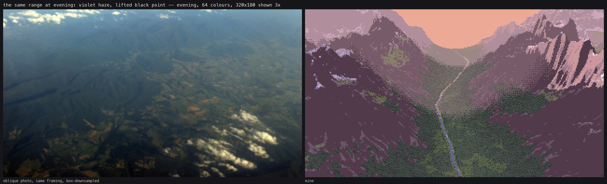
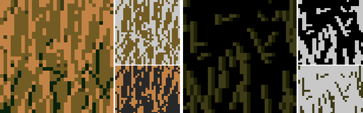
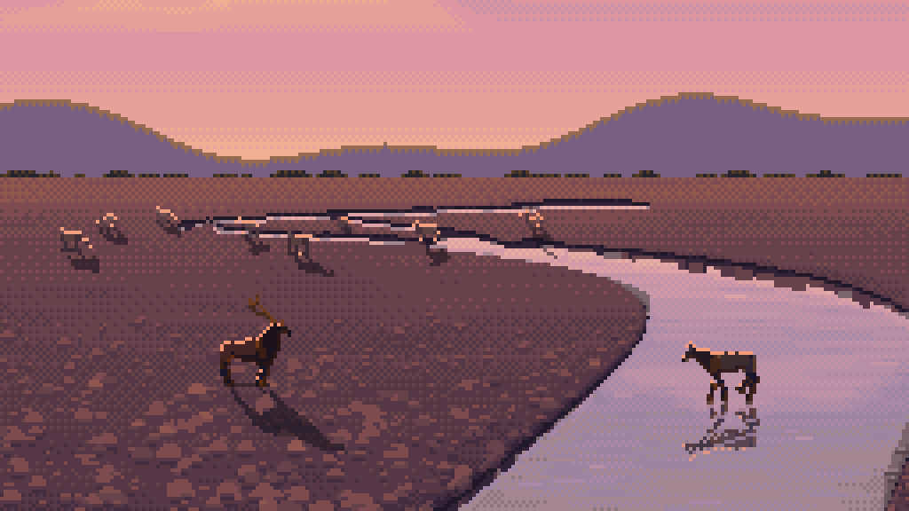
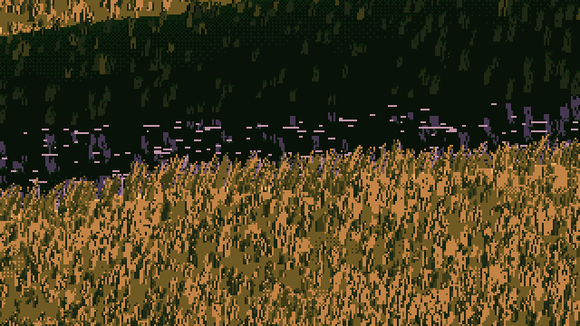

The observation student (pedagogy arm 4)
David's pick: incredible results. Start with its finished scenes near the end of the tutorial, then read how it got there from a posterised first render.
Taught to see the real world first: photographs of granite, grass, still water and dusk, measured and block-in studied, then translated one truth at a time into Ferrari's language.

The aerial student
Forest, rivers, rock, snow and haze seen from above, measured from oblique aerial photographs and translated into pixels.

The analysis student (pedagogy arm 3)
Taught to understand the picture completely before painting: planes, values, light, edges, clusters, palette and depth, measured in Ferrari's native pixels, then turned into a method.

The atelier student (pedagogy arm 1)
One of four students given the same small task, taught the way a classical atelier teaches: simple forms in grey, then one boulder, then the setting, then material, then colour last.

The cobbles student
Rounded stones and the gravel bars they form, from one cobble in grey to a whole bar at every hour.

The elk and deer student
Elk and deer from a 60 px hero animal to a 2 px dot, in any facing and gait, alone and in herds.

The grass-at-every-distance student
Grass that zooms from a person's height to a whole region without popping.

The willow student
Low, many-stemmed willows of braided rivers and gravel bars, learned from a master copy of Ferrari's leafy masses and grown into riparian stands through the seasons.